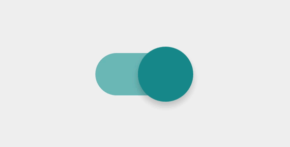

Kick-starting some side projects.
Recently, I have been thinking about keeping doing something really simple, but also can help me to get to know more foundation about HTML, CSS, and JS, evermore, writing the whole process down into a blog, I believe this will bring me some benefits for upskilling, and for becoming a more experienced developer.
I believe this will bring me some benefits for upskilling, and for becoming a more experienced developer.
What I build this week.
Being as a developer and a designer, it’s always exciting to come out with a fantastic UI and trying to build it, however, sometime I would avoid to have myself in a difficult situation by just making the design simpler, so I’ve decided this time I want to get some inspiration UI on internet.
Here it is.

Source: http://www.uiparade.com/portfolio/simple-toggle/
Starting building.
First of all, there are 2 challenges for me.
- Making the elastic animation of switcher.
- Building the whole UI in pure CSS.
Of course the 2nd one is the challenge I assigned to myself, I want to avoid to use jQuery by no reason.
html structure
Actually, I didn’t really have a clear idea about how to build a toggle like that,
this took me a while and then I decided to search the similar UI on codepen,
I took this code as base and do some customization, on the other hand, I choosed to use BEM naming convention for the html structure.
|
|
CSS
First of all, setting up the basic style of the toggle.
|
|
Setting up the checked/not checked status CSS.
Elastic Effection
As we can see from the insiration gif, when we click the button,
it will shake with elastic effection, which is lovely,
I found this article, and realized that
I can make it happend by using scale value of transform attribute.
|
|
onClick in CSS
Since I’ve decided not to use js, the click event in CSS is tricky for this UI.
This post on stack overflow helps me to make it happen as much as possible. When the checkbox is active, set the animte attribute to the element, so everytime users click on the button, it will trigger the elastic animation like the gif picture.